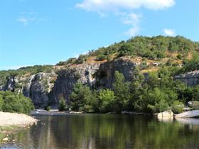

Mijn favoriet land is Frankrijk. Ik vind dit land zo leuk, omdat de taal heel erg mooi is en het is gewoon een prachtig land.
Berrias-et-Casteljau is een plaatsje in de Ardeche. Het ligt heel erg afgelegen maar dat maakt het zo leuk. Ik ga hier heel graag op vakantie.
In de buurt van Casteljau liggen een aantal dingen die leuk zijn om te bezoeken. Er zijn veel marktjes maar ook een leuk bos om in te gaan wandelen.
